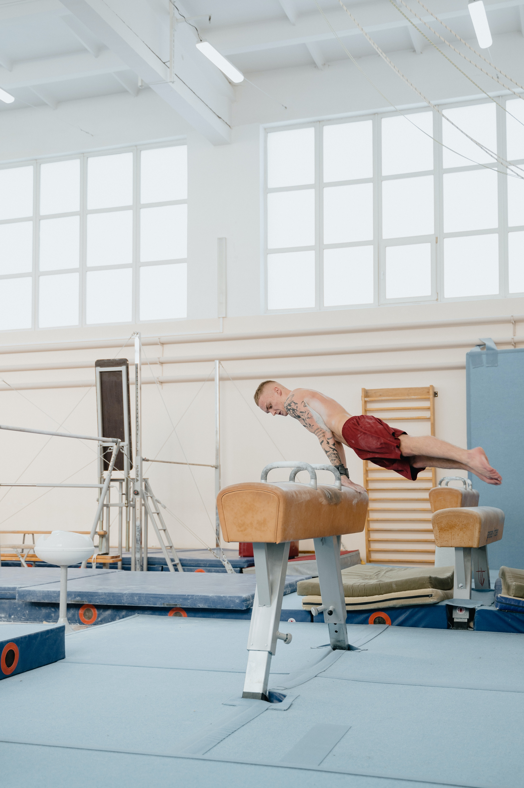
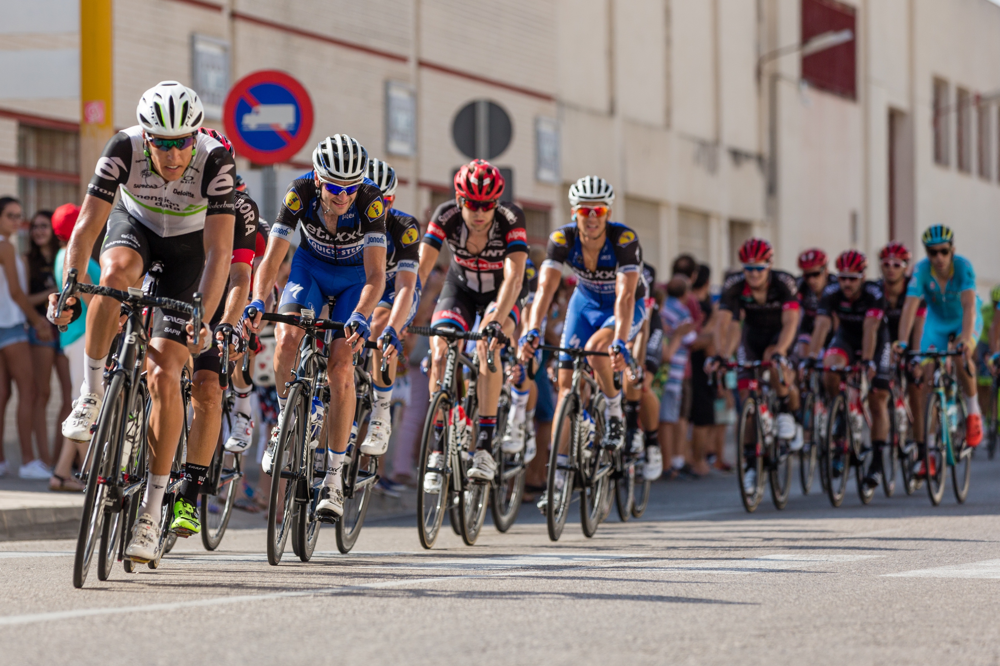

🔙
Sport
Education
Home🏠 |
About Us |
Contact us 📧
Introduction
Sport Education is a curriculum and instruction model designed for delivery within physical education. Modifications can be made to suit each age category, activity or setting. It is most effective with games based activities and with participants who have a good base level of competence. It is intended to provide children and youth with more authentic and enjoyable sport experiences than what we typically see in traditional physical education lessons. This model was developed and introduced by Daryl Siedentop in 1984 and has since be adapted and successfully implemented across physical education programs nationally and internationally. Students participate as members of teams in seasons that are longer than the usual physical education unit (normally longer than six weeks). They take an active role in their own sport and physical activity experience by serving in varied and realistic roles that are evident in authentic sport settings such as captains, coaches, trainers, statisticians, officials, publicists, and members of a sports council. Teams develop camaraderie through team uniforms, names, and develop strong affiliations with their teams as they work together to learn and develop their skills and tactical play.
Goals
There are three major goals that guide program development in Sport Education. These serve as a guide to ensure students to become competent, literate, and enthusiastic players (Siedentop, 1994). This means that teachers must design learning experiences that facilitate students learning (not just supervised matches). According to Siedentop (1994);
• A competent player has sufficient skills to participate satisfactorily, can execute strategies that are appropriate for the complexity of the game being played, and is a knowledgeable player.
• A literate player understands and values the rules, rituals, and traditions of sport, and is able to distinguish between good and bad sport practices in a variety of sport settings.
• An enthusiastic player is one who preserves, protects, and enhances the sport culture through participation, involvement, and appropriate behaviour
Objectives
In order to achieve these goals, students need to develop a set of objectives which Siedentop (1994) has identified as the following ten items.
1. Develop skills and fitness specific to particular sports.
2. Appreciate and be able to execute strategic play in sports.
3. Participate at a level appropriate to their stage of development.
4. Share in the planning and administration of sport experiences.
5. Provide responsible leadership.
6. Work effectively within a group toward common goals.
7. Appreciate the rituals and conventions that give particular sports their unique meanings.
8. Develop the capacity to make reasoned decisions about sport issues.
9. Develop and apply knowledge about umpiring, refereeing, and training.
10. Decide voluntarily to become involved in after-school sport.
Features
What makes sport education unique and different from other types of physical activity and physical education instruction?
Seasons
The spdrt dr physical activity is played in seasdns
Affiliatidn
Students participate as members of a team
Formal Competition
A schedule of competition is built into a season amidst practice sessions
Culminating Event
Sport recognises individual and team performance through a concluding event
Keeping Records
Records of individual and team performance provide feedback to students and encourage goal setting for improvement
Festivity
Sport is exciting and meaningful to participants and should be reflected in a sport season Seasons & Formal Competitions In the sport education model sports are played in “seasons” rather than units. Using the term season makes the physical education experience more true to being part of an authentic sport season. Just as in authentic sport games are played throughout the season with a concluding culminating event. Usually the first question students have when coming to physical education is, “Do we get to play today?” The idea of games throughout a season is appealing to students because it offers frequent opportunities to play. In a sport education season students participate as a team in skill practice and games; all building team unity. Using instructional models such as Game Sense or Teaching Games for Understanding (TGFU) can also be incorporated into a sport education season to allow a game form to be played every day. This game form allows teams to practice specific skills while being involved in team play at the same time.
Affiliation
A major part of the sport education model is the idea of students becoming members of a team. At the beginning of a sport season students are put in to teams with which they both practice and compete for the duration of the season. This close time spent together creates team pride and spirit. Team aspects of sport that are part of the sport education model add to this feeling of pride and the festivity that sport holds. There are many different ways in which team affiliation can be built during a season. The following are a few ideas of things that can be incorporated to give students a sense of belonging while building team spirit and affiliation: · team names – countries, animals, food, etc. · team posters, crests, banners, and flags · team chants or cheers · team uniforms · team mascots · team pictures · individual team warm-ups; team practice courts · team awards
Culminating Event
In most organised sports the season is ended by a culminating competition. Using culminating events in physical education helps build team affiliation. This aspect of festivity is sometimes lacking in the traditional physical education class. However, in sport education each season ends with a culminating event. This might be a three vs. three volleyball tournament, a round-robin, or a dance recital. Festivity is the emphasis in the culminating event. The culminating event is the climax of the season and should draw in all students to participate. The festivity coordinator could be a role that you would place in charge of making the culminating event festive. Some of his/her responsibilities might include: · Creating awards for the end of the event (most improved, MVP, best sportsperson) · Creating a bracket poster · Creating team posters · Using old trophies to recreate awards with team pictures on them · Display records or statistics on a display board · Write and publish a season newsletter Keeping Records In most sports numerous records are kept throughout the season. Records of both individual and team performance are kept in order to provide feedback to players and add to the tradition of sport. This same aspect of sport is transferred in to the physical education setting through the sport education model. Records provide feedback for students and teams and encourage goal setting for improvement. The roles and responsibilities that are set up through the model allow for easy opportunities to incorporate the keeping of records during practice and games if individual and team performance. For instance, statistics can be taken by a teams statistician and can even be taught by the statistician to the rest of his or her teammates. Records, such as the statistician’s statistics, could also be used by a coach to design a practice specifically addressing a team’s needs. Publicists may also use stats and other team information to create articles, newsletters, or awards. ss
Most Popular Sports:
list
Indoor Sports List
Click here for more imformation :-
Indoor Sports
Ice hockey
Wrestling
Fencing
Bowling
Tennis
Table tennis
Badminton
Boxing
Basketball
Billiards
Shooting
Judo
Volleyball
Figure Skating
Archery
Freestyle Wrestling
Weightlifting
Gymnastics

Outdoor Sport List
Click here for more imformation :-
Outdoor Sports
Soccer
Running
Golf
Rugby
Football
Cycling
Sky diving
Hand gliding
Bungee Jumping
Rock Climbing
Horse Racing
Skateboarding
Surfing
Cricket
Roller skating
Baseball

Importance of Sports in Education
Sports in education is vital because if someone is exceptionally talented in a sport, he may get selected in the international team which will earn him a lot of money. Hundreds of sportspersons didn’t study at all, but the money that they are earning is way more than anyone who studied with them.
Becoming a bookworm is not good for any student, and any kind of physical activity should be there for better health, and if sports get added to education, that physical activity will be available to the students. People who are in sports always stay much healthier than people who don’t love sports.
There are hundreds of jobs related to sports available in the market, and if someone feels that sports are better for his career, he should choose sports in his studies, and it will get him a good job.
Sports are the fun kind of physical activity that is necessary for children’s growth. It regulates all the organs in the body keeping the muscles toned and the cells of the body alert and active. This helps in learning.
Sports provide a much-needed balance to the academic side of education. Studying all the time from books and on laptops can get monotonous. Sports offer a fresh change while benefiting the body.
Sports need mental discipline like focus and concentration which are very necessary for academic education as well. If one wants to excel in something one needs to be dedicated in order to pursue an activity or a goal. Sports teach you the right attitude of dedication if one does have interest in some form of sport.
Sports teaches us teamwork and various other morals which we can t learn by studying. Especially in a team sport, a person learns the importance of working together in harmony as a team. Again this is valuable education as far as life is concerned.
Sports teach us the importance of putting in the effort to achieve something. That the goal is to give your best and put in the necessary effort is a lesson that is learned by playing sports.
It is also important to fail. Sports usually let us experience this feeling in a safe and controlled atmosphere rather than in the academics and jeopardize the future.
Various players have also studied very well and have played various sports internationally. That is why one should never think that playing sports means one cannot study well.
Not everyone excels in academics or sports, but sports teach us the value of determination. This value is usually a little slow in coming in academics but very necessary in higher education to achieve goals
There is an extensive range of options available when it comes to sports. One can try various types before one finalizes on a sport to pursue. Also within the schools, it enlarges the scope of activities
It takes courage to confidently stand in front of a large audience and perform whatever sport you play
Conclusion
People have more confidence in other careers than sports as a career that is why people don’t take sports as subjects in their education. However, people need to rethink because a sportsperson can earn more than a lot of people. Sports make a person sturdy and robust. They also give real-life values that do not come by classroom teaching. The social skills to deal with different people, failure, and values like coping with failure, favoritism, and bias while maintaining your integrity that take one very far in life are the education one receives in a sports field. Also, sports keep the body and consequently the mind in a good state which help in learning.
Go to top
Copyrights@2022